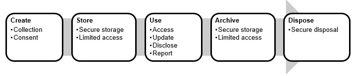

Purpose and Scope
This policy and procedure sets out staff responsibilities relating to collecting, using, protecting and releasing personal information, in compliance with privacy legislation.
It applies to all:
- Wagtail Services staff;
- aspects of Wagtail Services’ operations; and
- staff and Participant personal information.
This policy and procedure should be read in conjunction with Wagtail Services’ Records and Information Management Policy and Procedure. It meets relevant legislation, regulations and Standards as set out in Schedule 1, Legislative References.
Applicable NDIS Practice Standards
Information Management
Outcome: Management of each Participant’s information ensures that it is identifiable, accurately recorded, current and confidential. Each Participant’s information is easily accessible to the Participant and appropriately utilised by relevant workers.
Indicators
- Consistent processes and practices are in place that respect and protect the personal privacy and dignity of each Participant.
- Each Participant is advised of confidentiality policies using the language, mode of communication and terms that the Participant is most likely to understand.
- Each Participant understands and agrees to what personal information will be collected and why, including recorded material in audio and/or visual format.
Interaction of Applicable Legislation and Associated Definitions
Privacy Act 1988 (Cth) - regulates how personal information about individuals is handled. The Act includes thirteen Australian Privacy Principles (APPs). The APPs set out standards, rights and obligations for the handling, holding, use, accessing and correction of personal information. The Act protects the privacy of an individual's information where it relates to Commonwealth agencies and private businesses (including not-for-profit organisations) with a turnover of more than $3 million. All organisations that provide a health service and hold health information (other than in a staff record) are covered by the Act.
Health Information – personal information or an opinion about:
- the health, including an illness, disability or injury, (at any time) of an individual;
- an individual’s expressed wishes about the future provision of health services to the individual; or
- a health service provided, or to be provided, to an individual;
that is also:
- Personal Information;
- Other Personal Information collected to provide, or in providing, a health service to an individual;
- Other Personal Information collected in connection with the donation, or intended donation, by an individual of his or her body parts, organs or body substances; or
- genetic information about an individual in a form that is, or could be, predictive of the health of the individual or a genetic relative of the individual.
Personal Information – information or an opinion about an identified individual, or an individual who is reasonably identifiable:
- whether the information or opinion is true or not; and
- whether the information or opinion is recorded in a material form or not.
Sensitive Information – personal information or an opinion about an individual’s:
- racial or ethnic origin;
- political opinions;
- membership of a political association;
- religious beliefs or affiliations;
- philosophical beliefs;
- membership of a professional or trade association;
- membership of a trade union;
- sexual orientation or practices;
- criminal record;
that is also:
- Personal Information;
- Health Information about an individual;
- genetic information about an individual that is not otherwise health information;
- biometric information that is to be used for the purpose of automated biometric verification or biometric identification; or
- biometric templates.
National Disability Insurance Scheme Act 2013 (Cth) – regulates how personal information about NDIS Participants is handled by the National Disability Insurance Agency. This limits how the Agency collects and uses personal information and when and to whom information can be disclosed. The Agency must also comply with the Privacy Act 1988 (Cth).
Protected Information – information:
- about a person that is or was held in the records of the Agency; or
- to the effect that there is no information about a person held in the records of the Agency.
New South Wales
Privacy and Personal Information Protection Act 1998 (NSW) – regulates how personal information is handled by NSW public sector agencies including government agencies, local councils, State Owned Corporations and universities.
Personal Information - information or an opinion (including information or an opinion forming part of a database and whether or not recorded in a material form) about an individual whose identity is apparent or can reasonably be ascertained from the information or opinion. It includes such things as an individual’s fingerprints, retina prints, body samples or genetic characteristics. It does not include any of the following:
- information about an individual who has been dead for more than 30 years;
- information about an individual that is contained in a publicly available publication;
- information about a witness who is included in a witness protection program under the Witness Protection Act 1995 or who is subject to other witness protection arrangements made under an Act;
- information about an individual arising out of a warrant issued under the Telecommunications (Interception) Act 1979 of the Commonwealth;
- information about an individual that is contained in a public interest disclosure within the meaning of the Public Interest Disclosures Act 1994, or that has been collected in the course of an investigation arising out of a public interest disclosure;
- information about an individual arising out of, or in connection with, an authorised operation within the meaning of the Law Enforcement (Controlled Operations) Act 1997;
- information about an individual arising out of a Royal Commission or Special Commission of Inquiry;
- information about an individual arising out of a complaint made under Part 8A of the Police Act 1990;
- information about an individual that is contained in Cabinet information or Executive Council information under the Government Information (Public Access) Act 2009;
- information or an opinion about an individual’s suitability for appointment or employment as a public sector official;
- information about an individual that is obtained about an individual under Chapter 8 (Adoption information) of the Adoption Act 2000;
- information about an individual that is of a class, or is contained in a document of a class, prescribed by the regulations.
Health Records and Information Privacy Act 2002 (NSW) – regulates how health information is handled by NSW public sector agencies, public sector health organisations, private sector organisations, health service providers and businesses with a turnover of more than $3 million which hold health information.
Health information –
- personal information that is information or an opinion about:
- the physical or mental health or a disability (at any time) of an individual;
- an individual’s express wishes about the future provision of health services to him or her;
- a health service provided, or to be provided, to an individual; or
- other personal information collected to provide, or in providing, a health service;
- other personal information about an individual collected in connection with the donation, or intended donation, of an individual’s body parts, organs or body substances;
- other personal information that is genetic information about an individual arising from a health service provided to the individual in a form that is or could be predictive of the health (at any time) of the individual or of a genetic relative of the individual; or
- healthcare identifiers.
Private sector service providers in NSW must comply with the Privacy Act 1988 (Cth) and Health Records and Information Privacy Act 2002 (NSW) when handling health information. The NSW Information and Privacy Commission administers the HRIP Act and accepts complaints about health information.
Queensland
Queensland has privacy legislation that applies only to its public sector, including public sector health service providers. The Information Privacy Act 2009 (Qld) regulates how personal information is handled by Queensland public sector agencies.
Health Information —
- personal information about an individual that includes any of the following:
- the individual’s health at any time;
- a disability of the individual at any time;
- the individual’s expressed wishes about the future provision of health services to the individual; or
- a health service that has been provided, or will be provided, to the individual; or
- personal information about the individual collected for the purpose of providing, or in providing, a health service; or
- personal information about the individual collected in connection with the donation, or intended donation, by the individual of any of the individual’s body parts, organs or body substances.
Personal Information - information or an opinion, including information or an opinion forming part of a database, whether true or not and recorded in a material form or not, about an individual whose identity is apparent, or can reasonably be ascertained, from the information or opinion.
Sensitive Information —
- personal information about the individual that includes any of the following:
- the individual’s racial or ethnic origin;
- the individual’s political opinions;
- the individual’s membership of a political association;
- the individual’s religious beliefs or affiliations;
- the individual’s philosophical beliefs;
- the individual’s membership of a professional or trade association;
- the individual’s membership of a trade union;
- the individual’s sexual preferences or practices;
- the individual’s criminal record; or
- information that is health information about the individual.
Private sector service providers must comply with the Privacy Act 1988 (Cth) when handling health information.
The Queensland Office of the Information Commissioner receives and conciliates complaints related to the privacy of health information.
The Queensland Health Ombudsman can receive and investigate complaints about health services and health service providers, including registered and unregistered health practitioners.
Policy
Wagtail Services recognises, respects and protects everyone’s right to privacy, including the privacy of its Participants and staff. All individuals (or their legal representatives) have the right to decide who has access to their personal information.
Wagtail Services’ privacy and confidentiality practices support and are supported by its records and information management processes (see the Records and Information Management Policy and Procedure). Privacy and Confidentiality processes interact with the information lifecycle in the following ways:

All staff are responsible for maintaining the privacy and confidentiality of Participants, other staff and Wagtail Services.
Procedures
General
Wagtail Services’ Directors is responsible for ensuring Wagtail Services complies with the requirements of the Privacy Act 1988 (Cth). This includes developing, implementing and reviewing processes that address:
- why and how Wagtail Services collects, uses and discloses personal information;
- what information Wagtail Services collects about individuals and its source;
- who has access to the information;
- information collection, storage, access, use, disclosure and disposal risks;
- how individuals can consent to personal information being collected, withdraw or change their consent and change information about them held by Wagtail Services;
- how Wagtail Services safeguards and manages personal information, including how it manages privacy queries and complaints; and
- how information that needs to be updated, destroyed or erased is managed.
The Directors review these processes regularly, through annual Privacy Audits (see Wagtail Services’ Privacy Audit Form and Schedule 2. External Audit and Internal Review Schedule).
All staff are responsible for complying with this policy and procedure and their privacy, confidentiality and information management responsibilities. Staff must keep personal information about Participants, other staff and other stakeholders confidential, in accordance with the confidentiality provisions in their employment or engagement contract.
As per Wagtail Services’ Human Resources Policy and Procedure, all staff must undergo initial training and orientation, which includes training in privacy, confidentiality and information management. Staff knowledge and application of confidentiality, privacy and information management processes is monitored on a day-to-day basis and through annual Performance Reviews. Additional formal and on-the-job training is provided to staff where required.
Wagtail Services’ Privacy Statement must be provided to all Participants when they access the service, summarised in Wagtail Services’ Participant Handbook.
The Privacy Statement and a full copy of this policy and procedure must be provided upon request.
Photos and Videos
Photos, videos and other recordings are a form of personal information. Staff must respect people’s choices about being photographed or videoed and ensure images of people are used appropriately. This includes being aware of cultural sensitivities and the need for some images to be treated with special care.
Information Collection and Consent
Participant Information Collection and Consent
Wagtail Services will only request personal information that is necessary to:
- assess a potential Participant’s eligibility for a service;
- provide a safe and responsive service;
- monitor the services provided; and
- fulfil government requirements for non-identifying and statistical information.
Personal Participant information that Wagtail Services collects includes, but is not limited to:
- contact details for Participants and their representatives or family members
- details for emergency contacts and people authorised to act on behalf Participants
- Participants’ health status and medical records
- medication records
- service delivery intake, assessment, monitoring and review information
- assessments, reviews and service delivery records
- external agency information
- feedback and complaints
- incident reports
- consent forms
Prior to collecting personal information from Participants or their representatives, staff must explain:
- that Wagtail Services only collects personal information that is necessary for safe and effective service delivery;
- that personal information is only used for the purpose it is collected and is stored securely;
- what information is required;
- why the information is being collected and how it will be stored and used;
- the occasions when the information may need to be shared and who or where the information may be disclosed to;
- the Participant’s right to decline providing information;
- the Participant’s rights in terms of providing, accessing, updating and using personal information, and giving and withdrawing their consent; and
- the consequences (if any) if all or part of the information required is not provided.
Participants and their families must be provided with Wagtail Services’ Privacy Statement and informed that a copy of this policy and procedure is available on request.
Staff must provide privacy information to Participants and their families in ways that suit their individual communication needs. Written information can be provided in Easy English or explained verbally by staff. Staff can also help Participants access interpreters or advocates where required.
After providing the above information, staff must use a Consent Form to:
- confirm the above information has been provided and explained; and
- obtain consent from Participants or their legal representatives to collect, store, access, use, disclose and dispose of their personal information.
Participants and their representatives or families are responsible for:
- providing accurate information when requested;
- completing Consent Forms and returning them in a timely manner;
- being sensitive and respectful to other people who do not want to be photographed or videoed; and
- being sensitive and respectful of the privacy of other people in photographs and videos when using and disposing of them.
NDIS Audits
Wagtail Services complies with the requirements of the National Disability Insurance Scheme (Approved Quality Auditors Scheme) Guidelines 2018 whereby Participants are automatically included in audits against the NDIS Practice Standards. Participants may be contacted at any time by an NDIS Approved Quality Auditor for an interview, or for their Participant file and plans to be reviewed.
Participants who do not wish to participate in these processes can notify any staff member, who must inform the Directors in writing. Their decision will be respected by Wagtail Services and will be documented in their Participant file. Upon commencement of any audit process, Wagtail Services notifies its Approved Quality Auditor of Participants who have opted-out of the audit process
Staff Information Collection and Consent
Personal staff information that Wagtail Services collects includes, but is not limited to:
- tax declaration forms
- superannuation details
- payroll details
- employment / engagement contracts
- personal details
- emergency contact details
- medical details
- NDIS Worker Screening Checks, Police Checks and Working with Children Checks
- qualifications
- First Aid, CPR, Anaphylaxis and other relevant certificates
- personal resumes
Where relevant, forms used to collect the above information will also obtain the staff member’s consent to collect, store, access, use, disclose and dispose of their personal information.
Storage
Refer to the Records and Information Management Policy and Procedure for details on how Wagtail Services securely stores and protects staff and Participant personal information.
Access
Staff personal information must only be accessed the Leadership Team and Administrative Workers, who may only access the information if it is required in order to perform their duties.
Staff must only access Participants’ personal information if it is required in order to perform their duties.
Staff and Participants have the right to:
- request access to personal information Wagtail Services holds about them, without providing a reason for requesting access;
- access this information; and
- make corrections if they believe the information is not accurate, complete or up to date.
All Participant access or correction requests must be directed to a relevant staff member responsible for the maintenance of the Participant’s personal information. All staff access or correction requests must be directed to the Leadership Team or Administrative Workers. Within 2 working days of receiving an access or correction request, the responding staff member will:
- provide access, or explain the reasons for access being denied;
- correct the personal information, or provide reasons for not correcting it; or
- provide reasons for any anticipated delay in responding to the request.
An access or correction request may be denied in part or in whole where:
- the request is frivolous or vexatious;
- it would have an unreasonable impact on the privacy of other individuals;
- it would pose a serious threat to the life or health of any person; or
- it would prejudice any investigations being undertaken by Wagtail Services or any investigations it may be the subject of.
Any Participant access or correction requests that are denied must be approved by the Manager and documented on the Participant’s file.
Any staff access or correction requests that are denied must be approved by the Leadership Team and documented on the staff member’s file.
Disclosure
Participant or staff personal information may only be disclosed:
- for emergency medical treatment;
- to outside agencies with the person’s permission;
- with written consent from someone with lawful authority; or
- when required by law, or to fulfil legislative obligations such as mandatory reporting.
If a staff member is in a situation where they believe that they need to disclose information about a Participant or other staff member that they ordinarily would not disclose, they must consult the Manager before making the disclosure.
Reporting
Notifiable Data Breaches Scheme
The Notifiable Data Breaches (NDB) Scheme is a national scheme that operates under the Privacy Act 1988 (Cth). requires organisations to report certain data breaches to people impacted by the breach, as well as the Australian Information Commissioner.
A data breach occurs when personal information about others is lost or subject to unauthorised access. A data breach may be caused by malicious action, human error or a failure in information management or security systems.
Examples of data breaches include:
- loss or theft of devices (such as phones, laptops and storage devices) or paper records that contain personal information;
- unauthorised access to personal information by a staff member;
- inadvertent disclosure of personal information due to ‘human error’, for example an email sent to the wrong person; and
- disclosure of an individual’s personal information to a scammer, as a result of inadequate identity verification procedures.
In addition to harm caused to people who are the subject of data breaches, an incident like this may also cause Wagtail Services reputational and financial damage.
Further detail about the NDB Scheme is contained in the Data Breach Preparation and Response — A Guide to Managing Data Breaches in Accordance with the Privacy Act 1988 (Cth), published by the Office of the Australian Information Commissioner (OAIC).
Archiving and Disposal
Refer to the Records and Information Management Policy and Procedure for details on how Wagtail Services archives and disposes of Participants’ personal information.
Supporting Documents
Documents relevant to this policy and procedure include:
- Consent Form
- Records and Information Management Policy and Procedure
- Continuous Improvement Register
- Participant Handbook
- Privacy Statement
- Privacy Audit Form
Monitoring and Review
This policy and procedure will be reviewed at least every two years by the Leadership Team. Reviews will incorporate staff, Participant and other stakeholder feedback.
Wagtail Services’ feedback collection mechanisms, such as staff and Participant satisfaction surveys, will assess:
- satisfaction with Wagtail Services’ privacy and confidentiality processes;
- whether stakeholders have received adequate information about privacy and confidentiality; and
- the extent to which Participants and their supporters feel their privacy and confidentiality has been protected.
Wagtail Services’ Continuous Improvement Register will be used to record improvements identified and monitor the progress of their implementation. Where relevant, this information will be considered as part of Wagtail Services’ service planning and delivery processes.
↑ Back to Top